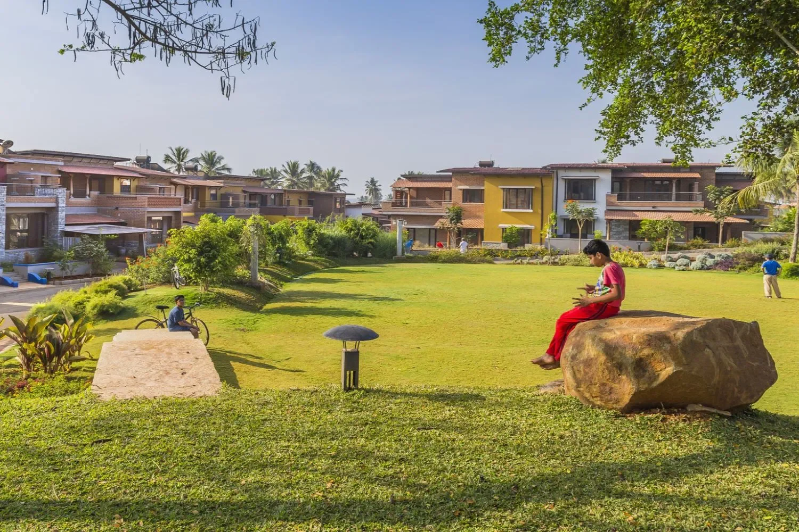
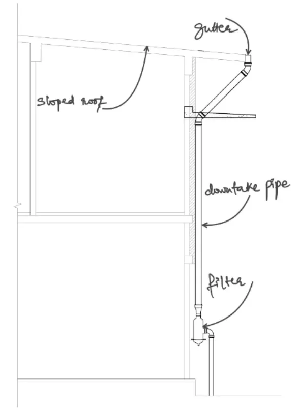
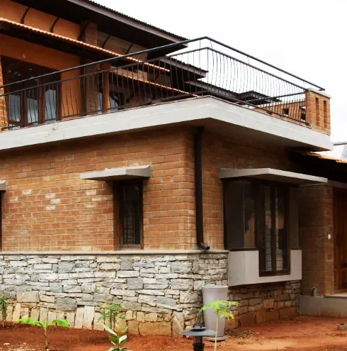
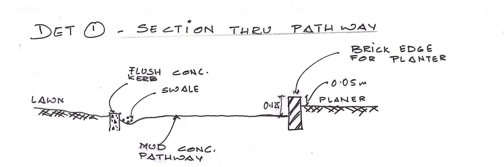
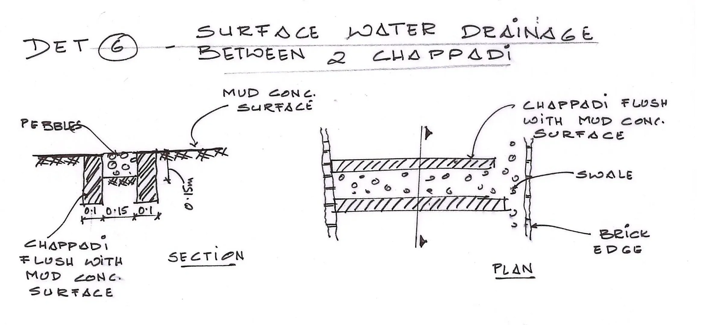
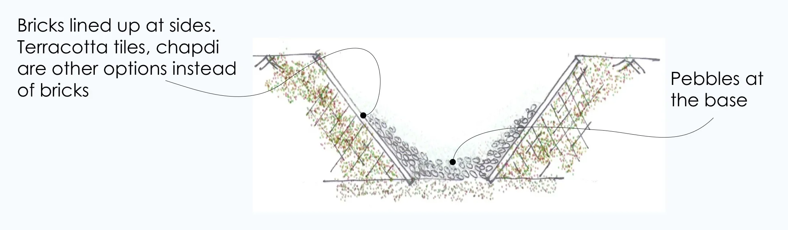
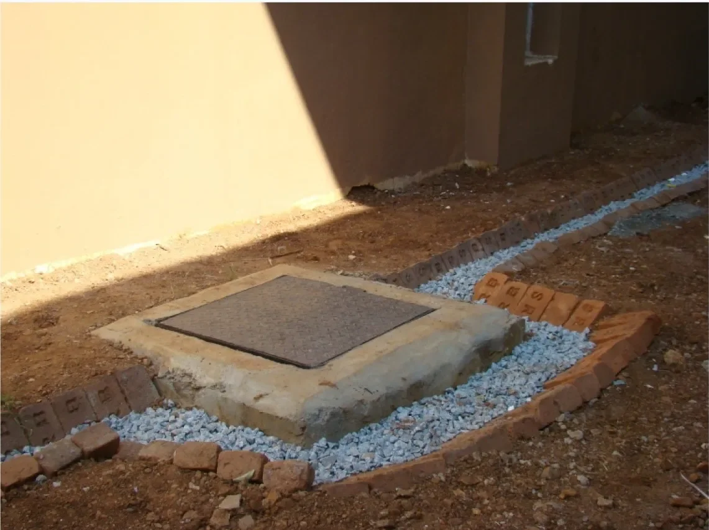

SustainabilityEver experienced the frustration of navigating ankle-deep rainwater flooding the streets, wondering why a city can’t handle a bit of rain without turning into deep puddles everywhere?
This common woe arises when surface drainage and percolation systems are not in place. In Bengaluru, where the average rainfall is 900 mm, it becomes crucial to manage rainwater effectively to prevent flooding and rejuvenate the groundwater table. Managing run-off water and percolation pits are not complex systems; however, they need to be well-planned and integrated effectively to manage the significant annual rainfall that the city experiences.
At GoodEarth, we have constantly innovated and experimented with various scientific methodologies, exploring diverse water harvesting and recycling techniques to stay off the grid.
Today, let’s dive into the basics and understand how percolation pits and simple design integration can be useful in managing stormwater by taking the examples of the designs incorporated in our projects.
What are percolation pits?
Percolation pits, also known as soak pits or recharge pits, are shallow excavations filled with permeable materials designed to enhance the percolation of rainwater into the ground. Think of them as nature’s sponges, absorbing surface run-off water and facilitating natural filtration, thereby recharging the groundwater.
Strategically placed along the periphery in the site, these pits are circular excavations formed by cement rings, equipped with holes, and covered with concrete slabs. The bottom is lined with gravel to ensure effective percolation. These pits act as a direct conduit for rainwater to seep into the ground, rejuvenating the groundwater table.
Alternatively, GoodEarth integrates a comprehensive rainwater harvesting system where rainwater from all the roofs is collected through a network of gutters and pipes. Gravity guides this collected rainwater into a dedicated tank. To reduce reliance on municipal water and bore wells, the harvested water undergoes filtration and is then pumped to homes.
In some instances, rainwater from rooftops is directed through gargoyles, elegantly dripping down along a chain into a designated pot. This pot serves as a natural filter, facilitating additional percolation into the ground.


Effective surface runoff solutions: Swales & cobble drains
In our commitment to effective water management, swales play a vital role. Wondering what swales are? These are gently sloping channels crafted to redirect and slow the flow of water, encouraging it to percolate naturally into the soil. Without imposing artificial structures, GoodEarth harmonises with the natural terrain, employing swales along the sides of the pathways to guide water flow seamlessly. These open channels, lined with pebbles, serve a dual purpose by shaping the water’s course and enriching the natural filtration process.




Another noteworthy detail in our water management strategy is the integration of cobble drains. Through meticulous placement of cobblestones (or cubical granite stones), these drains are crafted with a smooth slope in the driveways. This intentional design ensures a well-organized drainage system, allowing water to flow seamlessly without causing flooding.
Thus, these seemingly straightforward systems, strategically placed and thoughtfully integrated, not only address the exasperating issue of urban flooding but also aid in replenishing the groundwater reserves.
If you want to know more about our water management techniques in depth, you can read –


Leave A Comment